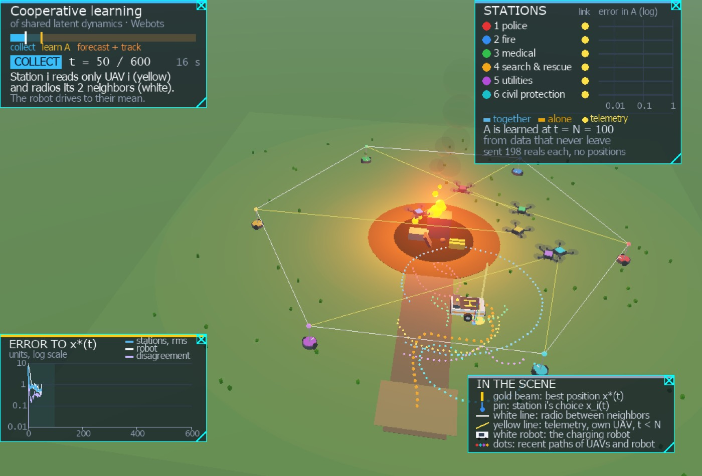

The parameters are latent
Station i never receives θi. It receives noisy gradients of its own cost, and only while t < N. System identification that assumes measured states does not apply.
Submitted to L4DC 2027
Networked agents must agree on a decision that minimizes the sum of their local costs. Each cost depends on a private parameter the agent cannot measure. The parameters move, the motion is linear and unknown, and every agent sees the same dynamics. After a short burst of noisy gradients, the measurements stop and the minimizer keeps moving.
The stations on this page reconstruct those parameters from windows of gradients, learn the shared model by averaging instrumental-variable moments with their neighbors, and track the minimizer by gradient tracking on the gradients they can forecast.

A fire in the North Wharf solvent warehouse. Six agencies each fly one search UAV. A wheeled charging robot carries the landing pad. The replay below is the audited Webots run, seed 2026, N = 100, then 200 steps of tracking. Every coordinate comes from the six station controllers. Drag to pan, scroll to zoom, and click a station.
One paper unit is 10 m, so the tracking errors above are also printed in metres. In the diorama a unit is drawn as 0.5 m, which is why the whole site fits in one view, and one algorithm step is ten simulator steps of 32 ms (0.32 s). Space plays and pauses. Arrow keys step one frame. The open rings after t = 100 are each station’s forecast of its own UAV.
The same world, recorded in Webots at 1280×720 and played at 2× (1 min 40 s). This take uses a longer tracking horizon, 500 steps, so the search line travels farther around the warehouse. Three drones land on the moving pad as scenery. The model and x*(t) do not change when they do.
We study networked agents that must agree on a decision minimizing the sum of their local costs, where each cost contains unmeasurable stochastic parameters that evolve with linear but unknown dynamics shared by all agents. Each agent receives only finitely many noisy gradient measurements and must then keep tracking the moving minimizer. Our scheme reconstructs the parameters from windows of gradients, learns the shared dynamics cooperatively by averaging instrumental-variable moment matrices over the network, and tracks the minimizer by gradient tracking on forecast gradients. We bound the error of every agent in learning the dynamics and in tracking the minimizer, and show that the learning error, and through it the tracking error, decreases with the number of agents.
Station i never receives θi. It receives noisy gradients of its own cost, and only while t < N. System identification that assumes measured states does not apply.
There is no server and no pooled dataset. After N gradients the oracle goes away, while x*(t) keeps moving with the wind and, in the Webots mission, with the search route.
A window estimate of θ shares noise with the residual of the regression θ(t+1) ≈ A θ(t). Instrumental variables remove that errors-in-variables bias. Pooled least squares does not, and it gets worse as N grows.
| (A) charging cart | (B) recommendation | |
|---|---|---|
| Agents, decision, parameter | m = 6, n = 2, p = 2 | m = 8, n = 3, p = 3 |
| Graph | ring + 3 chords, σ = 0.50 | ring + 2 chords, σ = 0.68 |
| Shared dynamics A | 0.99 Rot(0.15), period about 42 steps | block-diagonal: 0.98 Rot(0.25) and 0.95 |
| Noise Q, R, P0 | 0.05² I, 1.5² I, 4² I | 0.02² I, 0.15² I, 1.5² I |
| Window k, step α | 2, 0.2 | 3, 0.25 |
| What moves | wind on six patrol UAVs; the cart should sit at their service-rate-weighted centroid | taste for three genres; eight servers must agree on shared feed boosts |
In (A) the position of UAV i is a known plan plus an unknown deviation, bi(t) = pi(t) + θi(t), with θi(t+1) = A θi(t) + wi(t). Putting the cart at x costs station i the weighted squared distance hi ‖x − bi(t)‖². The team cost is smallest at x*(t) = Σ hi bi(t) / Σ hi. A noisy gradient at any x is a noisy position of that UAV. The paper’s numerical study holds the plans fixed. The Webots mission lets the plans move: a line abreast, 90 m long, whose centre circles the site once every 600 s.
In (B) eight regional servers hold their own engagement data. The backbone is sparse. They must agree on a boost x ∈ ℝ³ for three genres while user interest drifts with a shared, unknown A: a damped seasonal oscillation in the first two genres and a fading interest in the third. The cost is a regularized logistic loss, so the gradients are nonlinear in x and the forecasts still enter linearly through θ.
The cards follow the replay. Press play and the active layer is outlined.
1 · Reconstruct
For each window of length k, agent i stacks its noisy gradients and the known sensitivity of the cost, and computes the Gauss–Markov estimate of θi at the start of the window. The estimate splits into the truth, a noise term, and a bias from the drift of θ inside the window.
θ̃i(t) = Ki,t ȳi,t
2 · Identify
Least squares on θ̃(t+1) ≈ A θ̃(t) is inconsistent, because the regressor and the residual share measurement noise. The instrument is the window estimate from k steps earlier. Agents average the two p×p moment matrices for τ rounds and invert locally.
Âi = M̂1(i)(τ) (M̂0(i)(τ))−1
3 · Track
After t = N the last window estimate is rolled forward with Âi. Gradient tracking runs the whole time: on measured gradients while data are arriving, and on forecast gradients afterwards. An estimate whose spectral radius exceeds 0.999 is rescaled to that radius before it is used to forecast.
xi+ = Σj Wij (xj − α sj)
What crosses the radio is an iterate, a gradient tracker, and, once, the moment matrices. For p = 2 that is 2 reals per tracking message and 24 reals for three consensus rounds of two 2×2 matrices. A measurement, a parameter, and a forecast stay where they were computed.
With m agents and N gradients each, every agent identifies A with a statistical error of order √(log(m/δ) / (m N)), the rate of a single learner holding all mN samples, plus a consensus term that decays geometrically in the number of rounds, plus a windowing bias set by k and by ‖A − I‖. The gain survives latent observations, the window bias, and finitely many consensus rounds.
For t ≥ N the tracking error of agent i splits into three pieces:
How far xi sits from the average of the iterates. Gradient tracking contracts it at a rate set by the network.
How far that average sits from the minimizer of the forecast costs. This is the lag of a constant step size behind a moving target.
How far the forecast minimizer sits from the true x*(t). Cooperation shrinks this term. Forecasting a stochastic parameter leaves a floor that no amount of communication removes.
The learning error decreases with m, and the tracking error follows it. The gain is largest when N is small. Once N is large enough that the forecast is already close to an oracle that knows A, extra samples mostly buy a cleaner model, and the remaining tracking error is the lag behind x*(t).
Fifty Monte Carlo trials, tracking horizon 200 steps, τ = 3 against a station that identifies alone (τ = 0). Lines are medians. Bands are interquartile ranges. Hover a marker for the value. RMSE is in units of 10 m.
| N | RMSE together | RMSE alone | ‖Â−A‖ together | ‖Â−A‖ alone |
|---|---|---|---|---|
| 30 | 0.324 | 0.551 | 0.0082 | 0.0240 |
| 50 | 0.297 | 0.388 | 0.0063 | 0.0179 |
| 100 | 0.275 | 0.286 | 0.0061 | 0.0165 |
| 150 | 0.255 | 0.309 | 0.0056 | 0.0154 |
| 200 | 0.246 | 0.262 | 0.0050 | 0.0148 |
Identification versus the number of identical agents, N = 100: together 0.0152, 0.0084, 0.0053, 0.0055, 0.0052 at m = 2, 4, 8, 16, 32. Alone stays near 0.019–0.025.
Same trial count and horizon. Cooperation cuts tracking RMSE by 24–37% at every N, and for N ≥ 100 it sits within 3% of an oracle that knows A. Local estimates fail the stability test in 29–33% of trials. None of the cooperative estimates do. The cooperative error sits on a bias floor near 0.024, which is what the window length and ‖A − I‖ = 0.25 predict. Pooled least squares moves the wrong way, from 0.028 at N = 30 to 0.093 at N = 200.
| N | RMSE together | RMSE alone | ‖Â−A‖ together | ‖Â−A‖ alone | pooled LS |
|---|---|---|---|---|---|
| 30 | 0.0190 | 0.0300 | 0.0248 | 0.116 | 0.0277 |
| 50 | 0.0173 | 0.0259 | 0.0224 | 0.115 | 0.0330 |
| 100 | 0.0143 | 0.0188 | 0.0239 | 0.141 | 0.0543 |
| 150 | 0.0141 | 0.0216 | 0.0259 | 0.134 | 0.0715 |
| 200 | 0.0141 | 0.0216 | 0.0250 | 0.141 | 0.0928 |
At N = 100 the identification error versus τ is 0.141, 0.038, 0.027, 0.024, 0.022, 0.022 for τ = 0, 1, 2, 3, 5, 10. Exact averaging is 0.022. Tracking RMSE drops from 0.019 at τ = 0 to 0.014 at τ = 1 and then stays within 2% of that value. One or two rounds, at most 36 reals per link, recover almost all of the cooperative gain.
Against the other baselines in (B), tracking RMSE is 2.2–6.3 times lower than persistence, which freezes the last window estimate (Â = I). It is at most 13% above a centralized predictor that sees every forecast and minimizes the sum exactly, and 2% above it for N ≥ 100.
Case study (A) also runs inside Webots with one controller process per station. Stations hold only their own telemetry and their own variables. They use only the packets of their two nearest neighbors, a ring with σ = 2/3, which is sparser than the graph in the table above. A supervisor plays the wind and, while t < N, sends UAV i’s noisy position to station i alone. It does not relay station traffic and it does not move the robot. The robot has its own controller, wheel contact, and a receiver. It drives to the mean of the iterates it hears.
One hundred runs: N in {30, 50, 100, 150, 200}, twenty seeds each, 200 tracking steps. Replaying the reference code on the recorded telemetry reproduces the stations’ estimates to 6×10−16 and their iterates to 8×10−15. Local identification, exact averaging, the oracle, and persistence are replayed on the same telemetry.
A run with N = 100 takes 4.3 s of wall-clock time on a laptop. Each station sends 1,222 reals in 602 packets, about 46 kB in the simulator’s JSON encoding.
Cooperation reduces the median identification error from 0.030–0.042 to 0.011–0.014, a factor 2.6–3.1 at every N, at least √m = 2.45. Three rounds stay within 14% of exact averaging even though σ³ = 0.30. Before the safeguard, 23–32% of the local estimates are not Schur stable, against at most 4% of the cooperative ones, and none for N ≥ 150. The errors are about twice Figure (b) of case A because the smaller initial deviation excites A less: a synthetic check gives median error 0.0125 at P0 = 2.5² I against 0.0066 at the paper’s 4² I.
Tracking RMSE is 16–39% lower with cooperation than alone, within 16% of the oracle that knows A, and within 3% of it for N ≥ 100. It is 1.4–4.0 times lower than persistence. At N = 100 the iterates stay within 3.8 m RMS of x*(t) through the outage, against 4.5 m alone and 8.3 m with persistence. The robot, driving after their mean, stays within 2.9 m.
| N | RMSE persist. | RMSE local | RMSE coop. | RMSE oracle | ‖Â−A‖ local | ‖Â−A‖ coop. | exact avg. | ratio |
|---|---|---|---|---|---|---|---|---|
| 30 | 1.547 | 0.631 | 0.385 | 0.357 | 0.0420 | 0.0143 | 0.0125 | 2.9 |
| 50 | 1.115 | 0.527 | 0.394 | 0.339 | 0.0327 | 0.0106 | 0.0100 | 3.1 |
| 100 | 0.825 | 0.446 | 0.376 | 0.369 | 0.0303 | 0.0110 | 0.0097 | 2.7 |
| 150 | 0.631 | 0.402 | 0.337 | 0.336 | 0.0325 | 0.0114 | 0.0108 | 2.8 |
| 200 | 0.451 | 0.374 | 0.316 | 0.308 | 0.0323 | 0.0123 | 0.0108 | 2.6 |
The interactive run is seed 2026 at N = 100. On that seed the mean identification error is 0.019 together and 0.105 alone (5.6×), the tracking RMSE on [150, 300) is 0.291 units (2.9 m), and the robot drives about 24 m in the diorama.
Numpy for the paper experiments. Webots for the distributed run. Nothing is downloaded at runtime.
paper_code/experiments.py is Algorithm 1: windowed Gauss–Markov reconstruction, cooperative instrumental-variable identification, gradient tracking on the forecast, and the baselines (local identification, exact averaging, pooled least squares, persistence, a centralized predictor, an oracle that knows A, an oracle Kalman filter). Both case studies use the constants in the table above.
cd paper_code python3 experiments.py --out data --jobs 4 python3 summarize.py data python3 make_tikz.py data tikz
Each station is controllers/rendezvous_robot. The charging robot is controllers/charging_robot. The supervisor plays the wind, the search routes, the recharge flights, and the overlays. On macOS 27, use the Webots nightly build; the stable R2025a package reports every port as in use.
open -a Webots-nightly \ webots_demo/worlds/disaster_response.wbt cd webots_demo python3 tools/collect_data.py \ --N 100 --track 200 --seeds 2026-2045 python3 tools/analyze_runs.py output/runs
The zip is the source that regenerates the figures and the simulation: the experiment
code, the world, the protos, and the controllers. It omits the hundred logged runs.
The commands above reproduce them. Each controller runtime.ini points at
a local Python; edit that path before opening the world. The interpreter needs numpy.
@inproceedings{tripathi2027cooperative,
title = {Cooperative Learning of Shared Latent Dynamics
for Distributed Online Optimization},
author = {Tripathi, Shivanshu and Raissi, Maziar},
booktitle = {Learning for Dynamics and Control},
year = {2027},
note = {Submitted}
}